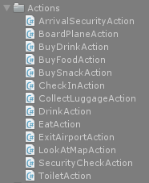
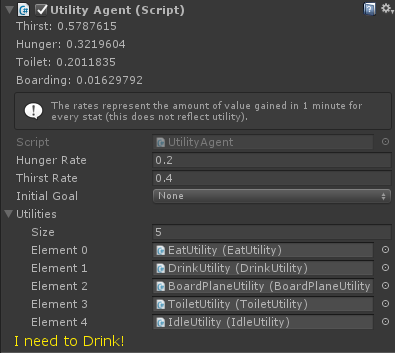
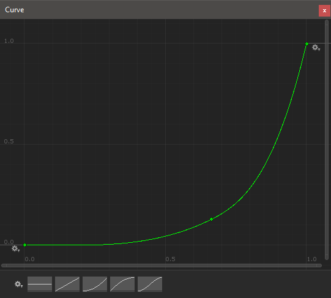
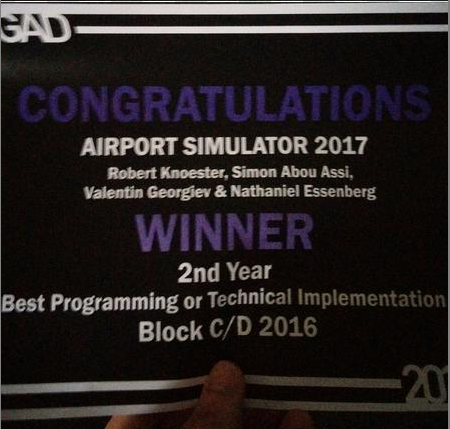

Artificial Intelligence
Github RepositoryThis is a group project I did with 3 other programmers from my school. We used Unity3D and C#. I primarily worked on the AI together with 1 other programmer, 1 other programmer did the agent avoidance and the last programmer did general airport managment. I did Utility Theory and helped with the GOAP.
This project aims to simulate the behaviour of people in an airport (we used Eindhoven Airport for the layout).
In order to simulate behaviour we made a Goal Oriented Action Planner (or GOAP) together with a concept called Utility Theory.
Video
Goal Oriented Action Planner (GOAP)
While we were planning the technical design for this project, we initially wanted to use behaviour trees. However, we discovered that a GOAP will be much more flexible for quickly adding new tasks for the agents. a GOAP is also much easier to manage if the amount of tasks grow.
The structure is designed as follows:
There are Agents, All agents have their own Planner which determines the agents current Action.
Actions have Preconditions which are also actions. (e.g. a precondition for boarding the plane would be checking in and going through customs).
In the code below you can see that boarding the plane requires certain other actions: (!HasBoardedPlane, HasCheckedIn and HasSecurityCheck).
public class BoardPlaneAction : GoapAction
{
public override int Cost { get { return 10; } }
public override float Duration { get { return 20f; } }
private GoapGoal[] _preconditions = new GoapGoal[]
{
state => !state.HasBoardedPlane,
state => state.HasCheckedIn,
state => state.HasSecurityCheck,
};
public override GoapGoal[] Preconditions { get { return _preconditions; } }
public override bool Init(GoapAgent agent)
{
if (IsInitialized) return true;
var flight = GetComponent<Agent>().flight;
_target = Airport.Instance.GetGate(flight);
if (_target == null)
return false;
IsInitialized = true;
_currentDuration = Duration;
return true;
}
public override void ChangeState(GoapState state)
{
state.HasBoardedPlane = true;
}
public override void NotifyAirport()
{
Airport.Instance.Register(_target, GetComponent<Agent>());
}
public override void Reset()
{
_currentDuration = 0f;
IsInitialized = false;
}
}
The actions need to be created once and can then automatically be used by the planner. This is especially nice because the actions don't have any intertwined relationship with eachother (like behaviour trees do).
Available actions:
The code below shows how the planner creates a plan. It first builds a graph (or tree) recursively. It will all the paths that lead to the target goal (action).
Once the graph is build, the nodes (which contain the actions) can be traversed back (using cost) to find the most efficient way of reaching the target action.
/// <summary>
/// Creates a plan of actions for a specified goal. Returns true if a plan was found.
/// </summary>
/// <param name="currentState">The current state of the agent.</param>
/// <param name="airportState">The current state of the airport.</param>
/// <param name="actionOutput">Ouputs the plan of actions for the specified goal. Should be empty</param>
/// <param name="goals">The end goals of the plan.</param>
/// <returns>Returns true if a plan was found.</returns>
public bool MakePlan(GoapAgent agent, Stack<GoapAction> actionOutput, GoapGoal[] goals)
{
var node = new Node(null, agent.State, null, 0);
var leaves = new List<Node>();
var actions = _availableActions.ToList();
foreach (var action in actions) action.Reset();
var foundPlan = BuildGraph(node, leaves, actions, goals);
if (!foundPlan) return false;
var n = leaves.Aggregate((Node)null, (acc, item) => acc == null || acc.cost > item.cost ? item : acc);
while (n != null)
{
if (n.action != null)
actionOutput.Push(n.action);
n = n.parent;
}
return true;
}
/// <summary>
/// Creates all available plans for the specified goals.
/// </summary>
/// <param name="parent">The parent node.</param>
/// <param name="leaves">A list with all possible plans. Should be empty when passed.</param>
/// <param name="availableActions">All the available actions.</param>
/// <param name="goals">The goals of the plan.</param>
/// <returns></returns>
private bool BuildGraph(Node parent, List<Node> leaves, List<GoapAction> availableActions, GoapGoal[] goals)
{
bool success = false;
foreach (var action in availableActions)
{
if (action.Preconditions.All(x => x(parent.state)))
{
var actionState = new GoapState();
action.ChangeState(actionState);
var affectedState = actionState.MergeState(parent.state);
var node = new Node(parent, affectedState, action, parent.cost + action.Cost);
if (goals.All(x => x(affectedState)))
{
leaves.Add(node);
success = true;
}
else
{
var actions = new List<GoapAction>(availableActions.Where(x => x != action));
if (BuildGraph(node, leaves, actions, goals))
success = true;
}
}
}
return success;
}
Utility Theory
Utility Theory is basically a concept that determines how important an action is for a particular agent at a certain time.
So Utility Theory determines what action needs to be done, while the GOAP determines how that action can be done.
The image below shows the utility of a random agent.
This agent has 5 different utilities (trail-actions that it can find important). With a trail-action I mean a pre-determined "goal" that can have preconditions but is essentially an end-goal instead of a substep. (e.g. the agents wants to board the plane, checking-in and going through customs is not what he wants, it something he has to do to reach the goal).
public enum LongTermGoal
{
None,
Eat,
Drink,
Toilet,
TakeCover,
BoardPlane,
}
The Utility Agent will notify the Goap Agent when a new goal has been assigned, the planner can then re-calculate the plan.
private void OnLongTermGoalHasChanged(LongTermGoal goal)
{
switch (goal)
{
case LongTermGoal.None:
goapAgent.AssignGoals(null, LongTermGoal.None);
navAgent.SetDestination(transform.position);
break;
case LongTermGoal.Eat:
goapAgent.State.HasEaten = false;
goapAgent.AssignGoals(new GoapGoal[]
{
state => state.HasEaten
}, goal);
break;
case LongTermGoal.Drink:
goapAgent.State.HasDrunk = false;
goapAgent.AssignGoals(new GoapGoal[]
{
state => state.HasDrunk
}, goal);
break;
case LongTermGoal.Toilet:
goapAgent.State.HasUsedToilet = false;
goapAgent.AssignGoals(new GoapGoal[]
{
state => state.HasUsedToilet
}, goal);
break;
case LongTermGoal.TakeCover:
break;
case LongTermGoal.BoardPlane:
goapAgent.State.HasBoardedPlane = false;
goapAgent.AssignGoals(new GoapGoal[]
{
state => state.HasBoardedPlane
}, goal);
break;
default:
break;
}
}
The amount of "Utility" is determined per goal using a curve.
The curve represents how important (how much utility) the goal has over a value between 0 and 1. This value can differ per action . (e.g. For the boarding plane action (curve shown below), the value represents the current time devided by the departure time).
As you can see, boarding the plane is a very unimportant action when it's too early to board. But at a certain time (x amount of minutes before departure) it becomes important very quickly. At a certain time before departures it becomes 1.
The curve below shows the utility curve for the toilet action.
This curve is different because you initially need to go a little bit and then your need increases more steadily over time.
I have build in a priority system on top of the utility system so that certain actions will always be chosen over others if their utility value is equal (you don't want to mis your plane because you have to go to the toilet).
Prize
With this project, we won the code award for our year (sorry for the low quality image).
